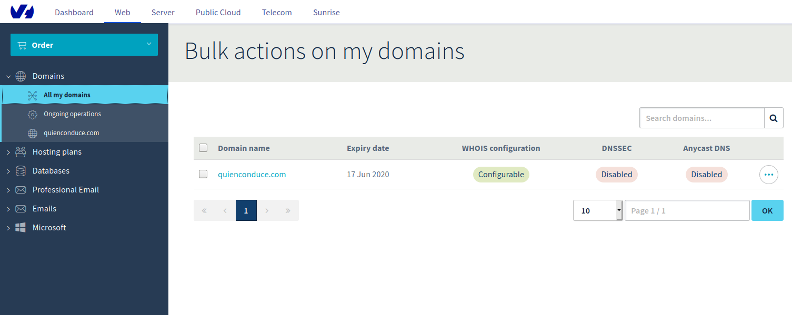
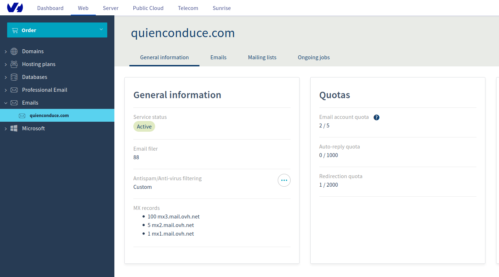
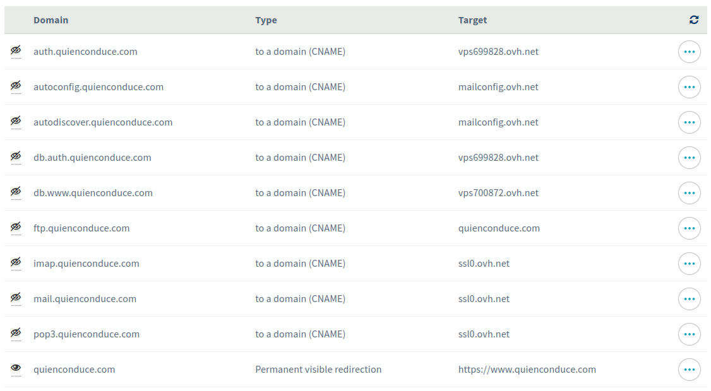

Last year, when I was sharing a car to work with seven or eight more people, I considered to implement some kind of application to decide who should be driving his/her car each of the days. It seems somehow easy to decide it, but when you are many people, some of them could take the day off at work, get sick, even some of them don't have a car... There are many cases to take into account, so it deserves having a program to make the choice for us. So let's start planning it!
The architecture
Since the very beginning I've thought of two different servers, one to host the Single Sign On (SSO) solution (keycloak in my case) and the other one for the application itself. Since I planned to build my application using spring boot and it already has wide Oauth2 - Open Id Connect support, the communication between the servers is done almost seamlessly.
In summary, I'll be running docker in both of the servers, using it's docker compose tool to run a basic orchestration in each of them. The SSO server will have a mariadb database instance where keycloak persists its data. Also a web based DB admin tool such as phpmyadmin will be available, in order to provide DB management from any device. The HTTP requests from the outside world will be made through a nginx server acting as a reverse proxy, managing the SSL certificates to encrypt the communication. The second server containing my own application happens to be almost the identical in architectural means.
Domain and hosting
Well, I decided to go with the infrastructure firstly. It might sound a bit weird, but having spent the last years mostly as a web developer, I had never dealt with hosting/domain administration myself before, so it was the perfect time to start with it! I chose the OVH provider, so I signed up in their site to set up my own domain:
The next step was to order the servers: OVH provides virtual servers at a very affordable price, so I chose the cheapest plan, with 1 virtual core and 2 GB of RAM, considering that the traffic won't be too high, this should be enough to fulfill my needs. The OS I chose was Ubuntu Server 18.04.
Once I had the domain and the servers, I wanted the servers to have names in that domain: I set up two subdomains into my main domain, which are auth.quienconduce.com for the SSO server and www.quienconduce.com for my application. Those names are registered as CNAME DNS records and mapped to the OVH virtual server names.
Since I wanted my application to look a bit of professional, I also bought a mail service for my domain. The cheapest OVH fares offers up to five accounts, which seemed more than enough for what I need. This will be the mail server for sending the e-mail messages for the users Sign Up process and notifications:
Apart from this, I also wanted the main domain name to redirect to my application. This means, redirect quienconduce.com requests to https://www.quienconduce.com, so I assigned a permanent visible redirection for this, returning the 301 HTTP code as a response and pointing to my application url when requested. This is the whole picture of my redirections, including the ones for the mail server and all the applications:
Talking to the servers
I'm using Linux Mint in my PC at home, where the SSH client package is already installed, so connecting to the servers is a one liner such as:
> ssh root@www.quienconduce.comAnyway, keep in mind that using the root user directly isn't advisable, so better create a standard user and add it to the sudoers group with these steps:
> adduser aritz
> usermod -aG sudo aritzThen log in with the standard user and use sudo when required:
> ssh aritz@www.quienconduce.comkeycloak as my SSO solution
Keycloak is a Single Sign On solution brought by Red Hat, which provides:
The main advantage of using an already built open source product for securizing any application is that there are many people working on it, who are considered to have more expertise in the security field than myself or any full stack focused programmer. The IT security by itself is a complex subject, so better use already available libs/software, as long as they are backed by trusted companies - communities.
Keycloak is compatible with some of the most popular database engines, but I decided myself to use mariadb, instead of relying in the built in H2 database, which is not advisable for production stages. Here it is my docker-compose.yml configuration:
version: '2'
services:
mariadb:
ports:
- '127.0.0.1:3306:3306'
image: mariadb:10.4.5-bionic
container_name: mariadb
volumes:
- /home/aritz/mysql:/var/lib/mysql
environment:
MYSQL_ROOT_PASSWORD: ${MYSQL_ROOT_PASSWORD}
MYSQL_DATABASE: keycloak
MYSQL_USER: keycloak
MYSQL_PASSWORD: ${MYSQL_ROOT_PASSWORD}
keycloak:
image: jboss/keycloak
container_name: keycloak
environment:
DB_VENDOR: MARIADB
DB_ADDR: mariadb
DB_DATABASE: keycloak
DB_USER: root
DB_PASSWORD: ${MYSQL_ROOT_PASSWORD}
KEYCLOAK_USER: keycloak
KEYCLOAK_PASSWORD: ${KEYCLOAK_PASSWORD}
PROXY_ADDRESS_FORWARDING: 'true'
ports:
- 8080:8080
depends_on:
- mariadb
restart: on-failureBasically, this downloads the images of MariaDB and keycloak from the docker Hub and launches them in two containers, so as the SSO instance connects to the database. Also a user named "keycloak" will be created in the SSO server.
Couple of security related things here, in the mariadb container the port 3306 from the host is binded to the 3306 of the container, but apart from this I added the localhost address before, meaning that the DB server will only be available in the host machine. Also the passwords are set in docker environment variables, which are grabbed from an .env file in the same directory of the compose file, thus not being uploaded to the source control.
Managing the database through a web-based client
Having a web based client available is quite convenient, in order to be able to make changes from any browser. If we want to use a more advanced desktop client, we can configure SSH tunneling later on. The most popular tool for mysql/mariadb administration is phpmyadmin, so let's configure it in our docker compose file:
phpmyadmin:
image: phpmyadmin/phpmyadmin
links:
- mariadb:db
ports:
- 8081:80
environment:
MYSQL_ROOT_PASSWORD: ${MYSQL_ROOT_PASSWORD}
PMA_ABSOLUTE_URI: https://db.auth.quienconduce.comNginx proxy
With the given configuration, I've got three applications running: Mariadb, bound in the 3306 port, keycloak running in 8080 and phpmyadmin in 8081. But I would like to give names to these services to be publicly accessible. keycloak should be accessible by https://auth.quienconduce.com and phpmyadmin in https://db.auth.quienconduce.com, as I have already defined in my DNS registries. This task can be done configuring a reverse proxy at the top of them, so I chose to use nginx for this:
nginx:
image: valian/docker-nginx-auto-ssl
restart: on-failure
ports:
- 80:80
- 443:443
volumes:
- ssl_data:/etc/resty-auto-ssl
- /home/aritz/nginx:/etc/nginx/conf.d
links:
- phpmyadmin:phpmyadmin
- keycloak:keycloak
environment:
ALLOWED_DOMAINS: 'quienconduce.com'This isn't the standard nginx docker container, but a customized docker image which allows to integrate automatic SSL certificate generation for our site (thanks @Valian ;-)). We need to configure two docker volumes for this, the one needed for resty ssl data and the other for the nginx config itself. In our host machine, let's place two configuration files in /home/aritz/nginx:
server {
listen 443 ssl;
server_name auth.quienconduce.com;
include resty-server-https.conf;
location / {
proxy_pass http://keycloak:8080;
proxy_set_header Host $host;
proxy_set_header X-Real-IP $remote_addr;
proxy_set_header X-Forwarded-For $proxy_add_x_forwarded_for;
proxy_set_header X-Forwarded-Proto $scheme;
}
}server {
listen 443 ssl;
server_name db.auth.quienconduce.com;
include resty-server-https.conf;
location / {
proxy_pass http://phpmyadmin;
proxy_set_header Host $host;
proxy_set_header X-Real-IP $remote_addr;
proxy_set_header X-Forwarded-For $proxy_add_x_forwarded_for;
proxy_set_header X-Forwarded-Proto $scheme;
}
}This will make nginx proxy-pass the requests made to https://auth.quienconduce.com and https://db.auth.quienconduce.com to the keycloak and phpmyadmin servers, including the request headers defined. Here I use the docker aliases of the services to specify the host for the proxy_pass rule. However, for some reason I had to manually specify the port for keycloak, nginx wasn't able to find it otherwise.
Running the SSO server
After the docker compose file is configured, we just have to run this command to have everything up and running:
sudo docker-compose up -dAfter this, we can see that both SSO and database admin servers are accessible through their DNS names in a secure manner:
This is the list of running containers, with its names and port mappings:
> sudo docker ps
CONTAINER ID IMAGE COMMAND CREATED STATUS PORTS NAMES
f1fb4e7644b5 valian/docker-nginx-auto-ssl "/entrypoint.sh /usr…" 33 minutes ago Up 31 minutes 0.0.0.0:80->80/tcp, 0.0.0.0:443->443/tcp ubuntu_nginx_1
05744b919286 jboss/keycloak "/opt/jboss/tools/do…" 31 hours ago Up 31 minutes 0.0.0.0:8080->8080/tcp, 8443/tcp keycloak
573233b4d653 phpmyadmin/phpmyadmin "/docker-entrypoint.…" 3 months ago Up 31 minutes 0.0.0.0:8081->80/tcp ubuntu_phpmyadmin_1
c80f4632d7cc mariadb:10.4.5-bionic "docker-entrypoint.s…" 8 months ago Up 31 minutes 127.0.0.1:3306->3306/tcp mariadbConfiguring the DB backups
I wanted the DB to be backed up to some external site in case the server hard disk crashes or the information is lost after some fatal failure. So I wrote an script which uses rclone and copies the dump of the database content to my dropbox account:
docker exec mariadb mysqldump -u user -pmypass keycloak --single-transaction > /home/aritz/auth.sql
rclone --config="/home/aritz/.config/rclone/rclone.conf" copy /home/aritz/auth.sql dropbox:backupsThe rclone configuration file contains my dropbox account access token, so I set the script to run every night in the crontab, with the docker compose script configured to run in every reboot alongside:
00 00 * * * /home/aritz/backup.sh >> /var/log/backup.log 2>&1
@reboot /home/aritz/docker-compose.sh >> /var/log/docker-compose.log 2>&1Fast web application generation using jHipster
Even if spring boot provides a great way to set up web applications in a breeze, I wanted to speed up the process and decided to use the jHipster application generator. This tool is amazing since it lets you design your own entity domain model and then generate both the backend code written in java - spring and the front end using either Angular or ReactJs: In my case, I chose Angular. This is a snapshot of the web entity generator:
Configuring the continuous integration in gitlab
After finishing the set up and checked that everything was compiling, I uploaded my git repo to gitlab. This platform provides continuous integration with pipelines for different stages, so it's quite handy for my project, even if I'm the only developer working on it.
The stages defined in my pipeline configuration file are build and test. Inside them, the maven and node docker images are used to build the software and pass the test benchmarks, also the dependencies are configured to be cached to speed up the pipeline process. I want it to make the deployment in the future too, which basically generates the application docker image which is uploaded to the docker hub.
stages:
- build
- test
variables:
MAVEN_CLI_OPTS: '--batch-mode'
MAVEN_OPTS: '-Dmaven.repo.local=.m2/repository'
cache:
paths:
- .m2/repository/
- target/
- node_modules/
install_dependencies:
image: node:latest
stage: build
script:
- npm install
artifacts:
paths:
- node_modules/
build:mvn:
image: maven:latest
stage: build
script:
- mvn $MAVEN_CLI_OPTS clean compile
test:mvn:
image: maven:latest
stage: test
script:
- mvn $MAVEN_CLI_OPTS clean test
test:npm:
image: node:latest
stage: test
script:
- npm testGreetings
Last but not least, many thanks to @IreneUson who spent some time designing the logo for the website. Good job!
{kind=link}
{kind=link}
{kind=link}
{kind=link}
{kind=link}
{kind=link}
{kind=link}
{kind=link}